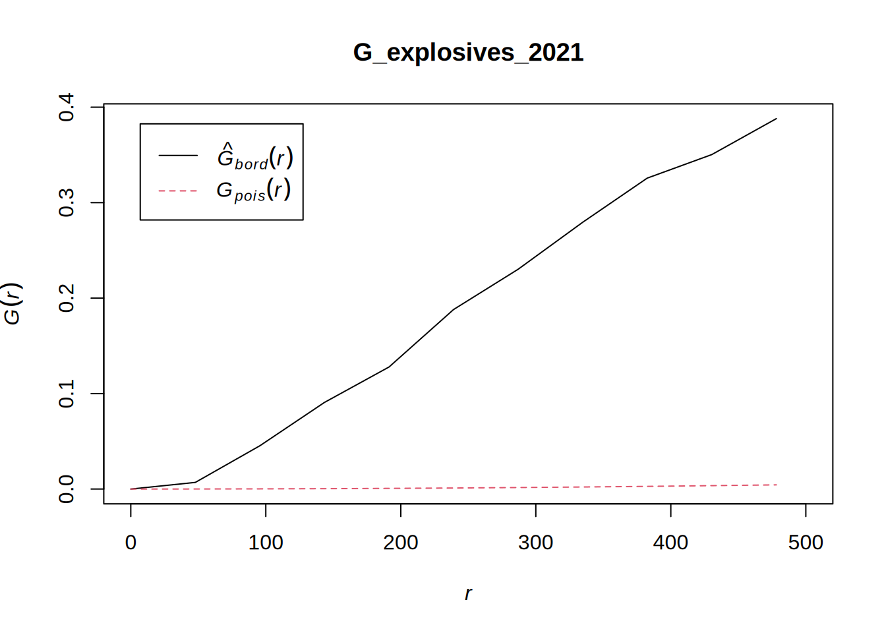
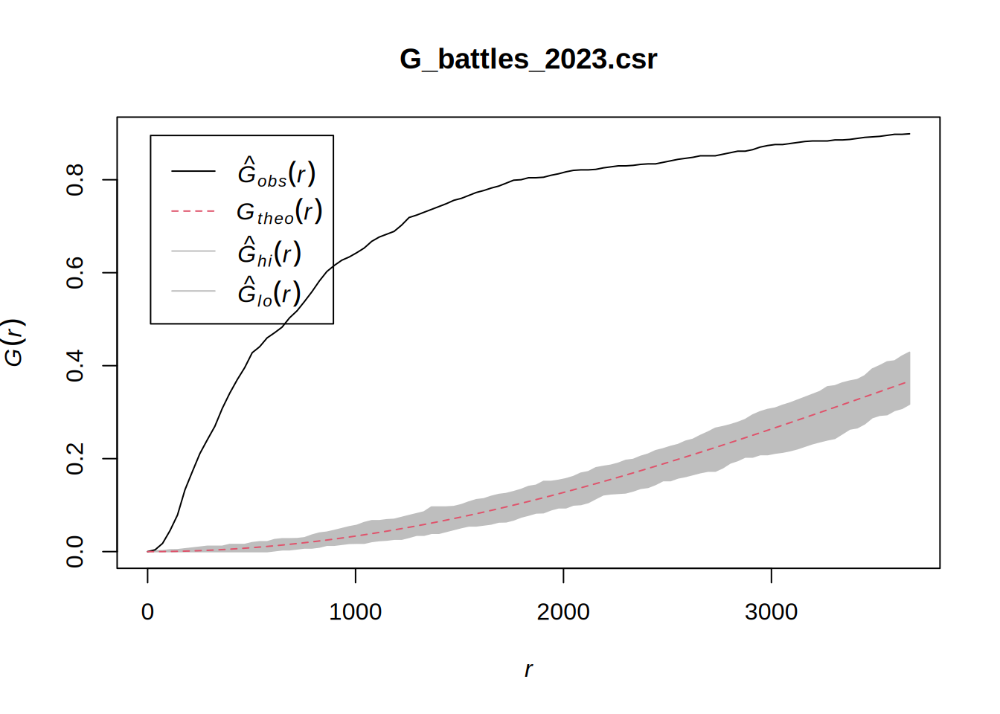
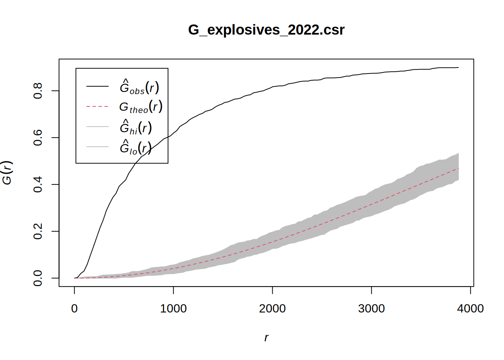
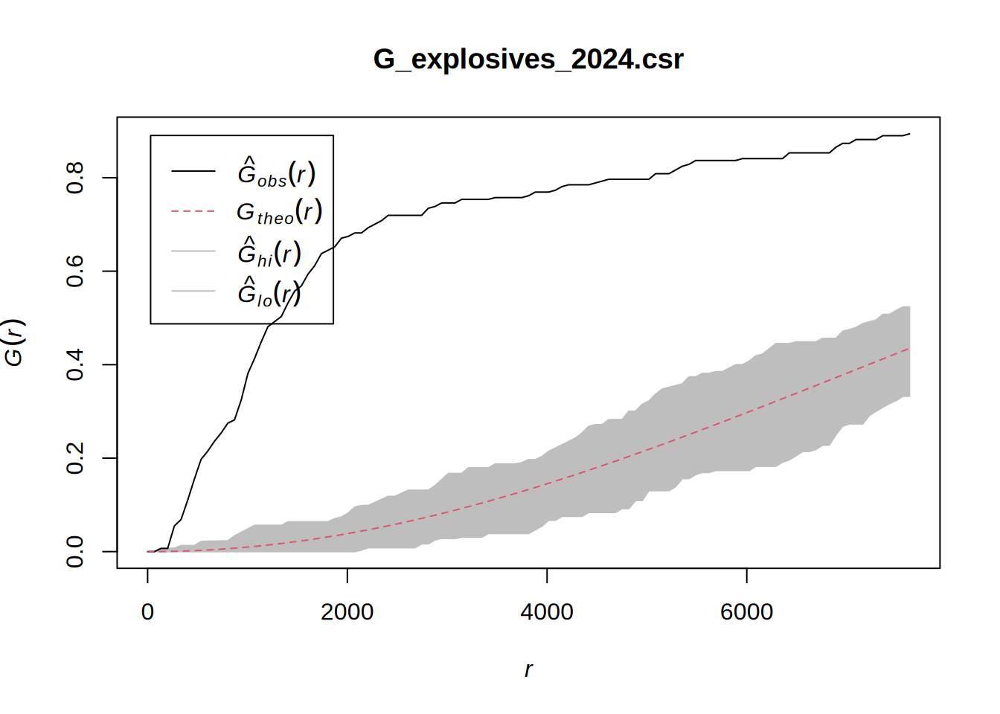

pacman::p_load(sf, tmap, tidyverse, sp, raster, spatstat, sparr)Take-home Exercise 1: Armed Conflict in Myanmar
Introduction
Millions of people have their lives shattered by armed conflict – wars – every year.
Armed conflict has been on the rise since about 2012, after a decline in the 1990s and early 2000s. First came conflicts in Libya, Syria and Yemen, triggered by the 2011 Arab uprisings. Libya’s instability spilled south, helping set off a protracted crisis in the Sahel region. A fresh wave of major combat followed: the 2020 Azerbaijani-Armenian war over the Nagorno-Karabakh enclave, horrific fighting in Ethiopia’s northern Tigray region that began weeks later, the conflict prompted by the Myanmar army’s 2021 power grab and Russia’s 2022 assault on Ukraine. Add to those 2023’s devastation in Sudan and Gaza. Around the globe, more people are dying in fighting, being forced from their homes or in need of life-saving aid than in decades.
Source: 10 Conflicts to Watch in 2024
In this article, we are going to be primarily focusing on the ongoing Myanmar Civil War which started in 2021. This civil war comes after Myanmar’s long history of insurgencies post independence from British Rule. It had escalated significantly after the 2021 coup d’état on 1 February 2021 which saw the Tatmadaw (Myanmar’s Military) overthrow the ruling party at the time.
Objective
We want to apply spatial point patterns analysis methods to discover the spatial and spatio-temporal distribution of armed conflict in Myanmar.
Packages
We will be using the following packages:
- sf
- tmap
- tidyverse
- sp
- raster
- spatstat
- sparr
Data
To achieve our objective, we will be using the following datasets
Armed conflict data of Myanmar between 2021-2024 from Armed Conflict Location & Event Data (ACLED)
Geospatial data on Myanmar Information Management Unit, MIMU
OpenStreetMap of Myanmar
Import
We first want to load in the conflict data ranging from 2021-2024
conflict2124_sf <- read_csv("data/2021-01-01-2024-06-30-Myanmar.csv") %>%
st_as_sf(coords = c("longitude", "latitude"),
crs = 4326) %>%
st_transform(crs = 32647)Rows: 51553 Columns: 31
── Column specification ────────────────────────────────────────────────────────
Delimiter: ","
chr (20): event_id_cnty, event_date, disorder_type, event_type, sub_event_ty...
dbl (11): year, time_precision, inter1, inter2, interaction, iso, latitude, ...
ℹ Use `spec()` to retrieve the full column specification for this data.
ℹ Specify the column types or set `show_col_types = FALSE` to quiet this message.We also want to import our shapefile of administrative area 1
madm1_sf <- st_read(dsn = "data/geospatial", layer = "mmr_polbnda2_adm1_250k_mimu_1") %>%
st_transform(crs = 32647)Reading layer `mmr_polbnda2_adm1_250k_mimu_1' from data source
`/home/syoongy/Documents/code/SMU/is415/IS415-GAA/Take-home_EX/Take-home_Ex01/data/geospatial'
using driver `ESRI Shapefile'
Simple feature collection with 18 features and 6 fields
Geometry type: MULTIPOLYGON
Dimension: XY
Bounding box: xmin: 92.1721 ymin: 9.696844 xmax: 101.17 ymax: 28.54554
Geodetic CRS: WGS 84Finally, we have the data from OpenStreetMap where we will focus on places
osm_sf <- st_read("data/geospatial/myanmar-latest-free.shp",
layer="gis_osm_places_a_free_1") %>%
st_transform(crs = 32647)Reading layer `gis_osm_places_a_free_1' from data source
`/home/syoongy/Documents/code/SMU/is415/IS415-GAA/Take-home_EX/Take-home_Ex01/data/geospatial/myanmar-latest-free.shp'
using driver `ESRI Shapefile'
Simple feature collection with 10497 features and 5 fields
Geometry type: MULTIPOLYGON
Dimension: XY
Bounding box: xmin: 92.24155 ymin: 9.606004 xmax: 101.0663 ymax: 28.17021
Geodetic CRS: WGS 84Wrangling
Conflict Data
We also want to add a column called quarter on our conflict2124_sf dataset to help when breaking down the data into yearly quarters. We will achieve this through the quarter() function from lubridate.
conflict2124_sf <- conflict2124_sf %>%
mutate(event_date = dmy(event_date),quarter = quarter(event_date))Administrative Area 1
We first want to rename our states from myanmaradm1 to have the same naming scheme as conflict2124
madm1_sf$ST <- gsub("\\s*\\(([^)]+)\\)", "-\\1", madm1_sf$ST)OpenStreetMap
With the OSM dataset being so large, we want to cut down on the dataset to only data that would be useful for our exploration. Let’s first look at the different types of places available from our dataset by finding the unique values in the fclass column
unique(osm_sf$fclass) [1] "island" "town" "village" "city" "suburb" "hamlet"
[7] "locality" "farm" "county" "region" We can now cut out the place types that are irrelevant to us and also remove unnecessary columns
places_to_keep <- c("village", "town", "city")
osm_sf <- osm_sf %>%
filter(fclass %in% places_to_keep) %>%
dplyr::select("osm_id", "fclass")summary(osm_sf) osm_id fclass geometry
Length:9513 Length:9513 MULTIPOLYGON :9513
Class :character Class :character epsg:32647 : 0
Mode :character Mode :character +proj=utm ...: 0 Joining Geospatial Data
We now want to combine both our geospatial datasets
myanmar_merged <- st_intersection(osm_sf, madm1_sf)summary(myanmar_merged)Let’s now save this data
write_rds(myanmar_merged, "data/rds/myanmar_merged.rds")myanmar_merged_sf <- read_rds("data/rds/myanmar_merged.rds") %>%
st_as_sf(coords = c("longitude", "latitude"), crs = 32647)summary(myanmar_merged_sf) osm_id fclass OBJECTID ST
Length:9517 Length:9517 Min. : 1.000 Length:9517
Class :character Class :character 1st Qu.: 8.000 Class :character
Mode :character Mode :character Median : 9.000 Mode :character
Mean : 8.924
3rd Qu.:13.000
Max. :18.000
ST_PCODE ST_RG ST_MMR PCode_V
Length:9517 Length:9517 Length:9517 Min. :9.4
Class :character Class :character Class :character 1st Qu.:9.4
Mode :character Mode :character Mode :character Median :9.4
Mean :9.4
3rd Qu.:9.4
Max. :9.4
geometry
MULTIPOLYGON : 3
POLYGON :9514
epsg:32647 : 0
+proj=utm ...: 0
Finally, let’s turn this into
Visualisation
We can first view the basemap of myanmar and its conflicts data combined through the use of tmap methods split year on year
tm_shape(madm1_sf) +
tm_polygons() +
tm_shape(conflict2124_sf) +
tm_dots() +
tm_facets(by="year",
free.coords = FALSE,
drop.units = TRUE)At a glance, we can see intense conflicts in years 2021 and 2022 which slowly decreased over time in years 2023 and 2024. This lines up with the timeline in which the military overthrew the ruling government which would liekly lead to higher rates of conflict. As time went on, these conflicts would decrease as the military would be actively taking down any opposition forces. As we do not have the full year of 2024, we are unable to determine a further decrease.
PPP
As we will be looking at KDE data, we want to convert our conflict data into PPP objects
conflict2124_ppp <- conflict2124_sf %>% {as.ppp(st_coordinates(.), st_bbox(.))}Warning: data contain duplicated pointssummary(conflict2124_ppp)Planar point pattern: 51553 points
Average intensity 3.12815e-08 points per square unit
*Pattern contains duplicated points*
Coordinates are given to 13 decimal places
Window: rectangle = [-208804.4, 640934.5] x [1103500.1, 3042960.3] units
(849700 x 1939000 units)
Window area = 1.64803e+12 square unitsLet’s first create an object to store all our split data called conflict2124_ppp_list and add in the years we want to look at
conflict2124_ppp_list <- list(
"2021" = list(
"Q1" = list(),
"Q2" = list(),
"Q3" = list(),
"Q4" = list()
),
"2022" = list(
"Q1" = list(),
"Q2" = list(),
"Q3" = list(),
"Q4" = list()
),
"2023" = list(
"Q1" = list(),
"Q2" = list(),
"Q3" = list(),
"Q4" = list()
),
"2024" = list(
"Q1" = list(),
"Q2" = list(),
"Q3" = list(),
"Q4" = list()
)
)We now want to assign our filtered quarter data into each of the years
for (targetyear in 2021:2024) {
for (targetquarter in 1:4) {
quarter_name <- paste0("Q", targetquarter)
filtered_data <- conflict2124_sf %>%
filter(year == as.character(targetyear) & quarter == as.character(targetquarter))
if (nrow(filtered_data) > 0) {
conflict2124_ppp_list[[as.character(targetyear)]][[quarter_name]] <- as.ppp(st_coordinates(filtered_data), st_bbox(filtered_data))
}
}
}Warning: data contain duplicated points
Warning: data contain duplicated points
Warning: data contain duplicated points
Warning: data contain duplicated points
Warning: data contain duplicated points
Warning: data contain duplicated points
Warning: data contain duplicated points
Warning: data contain duplicated points
Warning: data contain duplicated points
Warning: data contain duplicated points
Warning: data contain duplicated points
Warning: data contain duplicated points
Warning: data contain duplicated points
Warning: data contain duplicated pointsDeduplication
As we get a warning of duplicated points, we should aim to remove as many as possible. Let’s first find out how many duplicated points we have through the use of sum() and multiplicity().
sum(multiplicity(conflict2124_ppp) > 1)[1] 48258Let’s now remove these points using rjitter() to shift our points slightly.
conflict2124_ppp <- rjitter(conflict2124_ppp,
retry=TRUE,
nsim=1,
drop=TRUE)We can now use any() and duplicated() to check if there are still duplicated points
any(duplicated(conflict2124_ppp))[1] FALSEWe want to repeat this with the values in our ppp_list too
for (targetyear in names(conflict2124_ppp_list)) {
for (targetquarter in names(conflict2124_ppp_list[[targetyear]])) {
ppp_obj <- conflict2124_ppp_list[[as.character(targetyear)]][[targetquarter]]
if (class(ppp_obj) == "ppp") {
# Apply rjitter() to the ppp_obj
jittered_ppp <- rjitter(ppp_obj, retry = TRUE, nsim = 1, drop = TRUE)
# Assign the jittered ppp object back to the list
conflict2124_ppp_list[[as.character(targetyear)]][[targetquarter]] <- jittered_ppp
print(any(duplicated(conflict2124_ppp_list[[as.character(targetyear)]][[targetquarter]])))
}
}
}[1] FALSE
[1] FALSE
[1] FALSE
[1] FALSE
[1] FALSE
[1] FALSE
[1] FALSE
[1] FALSE
[1] FALSE
[1] FALSE
[1] FALSE
[1] FALSE
[1] FALSE
[1] FALSEOwin
We also want to create an owin object to ensure that all points we are looking at are within the Myanmar boundary.
madm1_owin <- as.owin(madm1_sf)plot(madm1_owin)Now let’s combine this with our conflict data
conflict2124_ppp_list <- lapply(conflict2124_ppp_list, function(year_data_list) {
lapply(year_data_list, function(quarter_data) {
if (class(quarter_data) == "ppp")
quarter_data[madm1_owin]
})
})plot(conflict2124_ppp_list$"2024"$Q1)plot(conflict2124_ppp_list$"2024"$Q2)Quarterly KDE
Now let’s view the quarterly KDE for our data. However, we first need to rescale our data to use KM.
conflict2124_ppp_list.km <- lapply(conflict2124_ppp_list, function(year_data_list) {
lapply(year_data_list, function(quarter_data) {
if (class(quarter_data) == "ppp")
rescale.ppp(quarter_data, 1000, "km")
})
})We now want to find the ideal bandwith to use for our data
Automatic Bandwith
Let’s first compare using the bandwith functions of diggle, CvL, ppl, scott,
conflict.bw <- density(conflict2124_ppp_list.km$"2021"$Q1,
sigma=bw.diggle,
edge=TRUE,
kernel="gaussian")
plot(conflict.bw)conflict.bw <- density(conflict2124_ppp_list.km$"2021"$Q1,
sigma=bw.CvL,
edge=TRUE,
kernel="gaussian")
plot(conflict.bw)conflict.bw <- density(conflict2124_ppp_list.km$"2021"$Q1,
sigma=bw.ppl,
edge=TRUE,
kernel="gaussian")
plot(conflict.bw)conflict.bw <- density(conflict2124_ppp_list.km$"2021"$Q1,
sigma=bw.scott,
edge=TRUE,
kernel="gaussian")
plot(conflict.bw)Manual Bandwith
We can also look at how our KDE will look with some manual values
conflict.bw <- density(conflict2124_ppp_list.km$"2021"$Q1,
sigma=10,
edge=TRUE,
kernel="gaussian")
plot(conflict.bw)conflict.bw <- density(conflict2124_ppp_list.km$"2021"$Q1,
sigma=20,
edge=TRUE,
kernel="gaussian")
plot(conflict.bw)conflict.bw <- density(conflict2124_ppp_list.km$"2021"$Q1,
sigma=30,
edge=TRUE,
kernel="gaussian")
plot(conflict.bw)When looking at the results, scott looks to give the best results. So for the next portions we will be using that.
par(mfrow=c(2,2))
plot(density(conflict2124_ppp_list.km$"2021"$Q1,
sigma=bw.scott,
edge=TRUE,
kernel="gaussian"),
main="2021 Q1")
plot(density(conflict2124_ppp_list.km$"2021"$Q2,
sigma=bw.scott,
edge=TRUE,
kernel="gaussian"),
main="2021 Q2")
plot(density(conflict2124_ppp_list.km$"2021"$Q3,
sigma=bw.scott,
edge=TRUE,
kernel="gaussian"),
main="2021 Q3")
plot(density(conflict2124_ppp_list.km$"2021"$Q4,
sigma=bw.scott,
edge=TRUE,
kernel="gaussian"),
main="2021 Q4")par(mfrow=c(2,2))
plot(density(conflict2124_ppp_list.km$"2022"$Q1,
sigma=bw.scott,
edge=TRUE,
kernel="gaussian"),
main="2022 Q1")
plot(density(conflict2124_ppp_list.km$"2022"$Q2,
sigma=bw.scott,
edge=TRUE,
kernel="gaussian"),
main="2022 Q2")
plot(density(conflict2124_ppp_list.km$"2022"$Q3,
sigma=bw.scott,
edge=TRUE,
kernel="gaussian"),
main="2022 Q3")
plot(density(conflict2124_ppp_list.km$"2022"$Q4,
sigma=bw.scott,
edge=TRUE,
kernel="gaussian"),
main="2022 Q4")par(mfrow=c(2,2))
plot(density(conflict2124_ppp_list.km$"2023"$Q1,
sigma=bw.scott,
edge=TRUE,
kernel="gaussian"),
main="2023 Q1")
plot(density(conflict2124_ppp_list.km$"2023"$Q2,
sigma=bw.scott,
edge=TRUE,
kernel="gaussian"),
main="2023 Q2")
plot(density(conflict2124_ppp_list.km$"2023"$Q3,
sigma=bw.scott,
edge=TRUE,
kernel="gaussian"),
main="2023 Q3")
plot(density(conflict2124_ppp_list.km$"2023"$Q4,
sigma=bw.scott,
edge=TRUE,
kernel="gaussian"),
main="2023 Q4")par(mfrow=c(1,2))
plot(density(conflict2124_ppp_list.km$"2024"$Q1,
sigma=bw.scott,
edge=TRUE,
kernel="gaussian"),
main="2024 Q1")
plot(density(conflict2124_ppp_list.km$"2024"$Q2,
sigma=bw.scott,
edge=TRUE,
kernel="gaussian"),
main="2024 Q2")
Second-order Spatial Point Patterns Analysis
Scope
I would like to scope down to the Sagaing Region as it has been a hotspot for clashes between the military and armed resistance groups.
We first need to retrieve our Sagaing data as an sf object
sagaing_sf <- madm1_sf %>%
filter(ST == "Sagaing")We can now create an owin object using this
sagaing_owin <- as.owin(sagaing_sf)plot(sagaing_owin)PPP
We want to now retrieve PPP objects for the different types of conflicts based on each year. This will help us see the change over time regarding the different types of conflicts.
Let’s first create a list to store this data. This will contain 4 different categories of battles, explosion/remote violence, strategic developments, violence against civilians.
conflict_sagaing_ppp_list <- list(
"2021" = list(
"Battles" = list(),
"Explosions/Remote violence" = list(),
"Strategic developments" = list(),
"Violence against civilians" = list()
),
"2022" = list(
"Battles" = list(),
"Explosions/Remote violence" = list(),
"Strategic developments" = list(),
"Violence against civilians" = list()
),
"2023" = list(
"Battles" = list(),
"Explosions/Remote violence" = list(),
"Strategic developments" = list(),
"Violence against civilians" = list()
),
"2024" = list(
"Battles" = list(),
"Explosions/Remote violence" = list(),
"Strategic developments" = list(),
"Violence against civilians" = list()
)
)Let’s now assign the data
for (targetyear in 2021:2024) {
for (targetevent in names(conflict_sagaing_ppp_list[[as.character(targetyear)]])) {
filtered_data <- conflict2124_sf %>%
filter(year == as.character(targetyear) & event_type == targetevent)
if (nrow(filtered_data) > 0) {
conflict_sagaing_ppp_list[[as.character(targetyear)]][[targetevent]] <- as.ppp(st_coordinates(filtered_data), st_bbox(filtered_data))
}
}
}Warning: data contain duplicated points
Warning: data contain duplicated points
Warning: data contain duplicated points
Warning: data contain duplicated points
Warning: data contain duplicated points
Warning: data contain duplicated points
Warning: data contain duplicated points
Warning: data contain duplicated points
Warning: data contain duplicated points
Warning: data contain duplicated points
Warning: data contain duplicated points
Warning: data contain duplicated points
Warning: data contain duplicated points
Warning: data contain duplicated points
Warning: data contain duplicated points
Warning: data contain duplicated pointsDeduplication
for (targetyear in names(conflict_sagaing_ppp_list)) {
for (targetevent in names(conflict_sagaing_ppp_list[[targetyear]])) {
ppp_obj <- conflict_sagaing_ppp_list[[as.character(targetyear)]][[targetevent]]
if (class(ppp_obj) == "ppp") {
# Apply rjitter() to the ppp_obj
jittered_ppp <- rjitter(ppp_obj, retry = TRUE, nsim = 1, drop = TRUE)
# Assign the jittered ppp object back to the list
conflict_sagaing_ppp_list[[as.character(targetyear)]][[targetevent]] <- jittered_ppp
print(any(duplicated(conflict_sagaing_ppp_list[[as.character(targetyear)]][[targetevent]])))
}
}
}[1] FALSE
[1] FALSE
[1] FALSE
[1] FALSE
[1] FALSE
[1] FALSE
[1] FALSE
[1] FALSE
[1] FALSE
[1] FALSE
[1] FALSE
[1] FALSE
[1] FALSE
[1] FALSE
[1] FALSE
[1] FALSESagaing Conflict Data
Now that we have removed the duplicates, we can now scope down our data further to only look at the armed conflict in Sagaing
conflict_sagaing_ppp_list <- lapply(conflict_sagaing_ppp_list, function(year_data_list) {
lapply(year_data_list, function(event_data) {
if (class(event_data) == "ppp")
event_data[sagaing_owin]
})
})G-Function
The G function measures the distribution of the distances from an arbitrary even to its nearest event.
Battles
G_battles_2021 <- Gest(conflict_sagaing_ppp_list$"2021"$Battles, correction = "border")
plot(G_battles_2021, xlim=c(0,500))G_battles_2022 <- Gest(conflict_sagaing_ppp_list$"2022"$Battles, correction = "border")
plot(G_battles_2022, xlim=c(0,500))G_battles_2023 <- Gest(conflict_sagaing_ppp_list$"2023"$Battles, correction = "border")
plot(G_battles_2023, xlim=c(0,500))G_battles_2024 <- Gest(conflict_sagaing_ppp_list$"2024"$Battles, correction = "border")
plot(G_battles_2024, xlim=c(0,500))Explosion/Remote Violence
G_explosives_2021 <- Gest(conflict_sagaing_ppp_list$"2021"$`Explosions/Remote violence`, correction = "border")
plot(G_explosives_2021, xlim=c(0,500))
G_explosives_2022 <- Gest(conflict_sagaing_ppp_list$"2022"$`Explosions/Remote violence`, correction = "border")
plot(G_explosives_2022, xlim=c(0,500))G_explosives_2023 <- Gest(conflict_sagaing_ppp_list$"2023"$`Explosions/Remote violence`, correction = "border")
plot(G_explosives_2023, xlim=c(0,500))G_explosives_2024 <- Gest(conflict_sagaing_ppp_list$"2024"$`Explosions/Remote violence`, correction = "border")
plot(G_explosives_2024, xlim=c(0,500))Strategic Developments
G_sd_2021 <- Gest(conflict_sagaing_ppp_list$"2021"$`Strategic developments`, correction = "border")
plot(G_sd_2021, xlim=c(0,500))G_sd_2022 <- Gest(conflict_sagaing_ppp_list$"2022"$`Strategic developments`, correction = "border")
plot(G_sd_2022, xlim=c(0,500))G_sd_2023 <- Gest(conflict_sagaing_ppp_list$"2023"$`Strategic developments`, correction = "border")
plot(G_sd_2023, xlim=c(0,500))G_sd_2024 <- Gest(conflict_sagaing_ppp_list$"2024"$`Strategic developments`, correction = "border")
plot(G_sd_2024, xlim=c(0,500))Violence against civilians
G_VaC_2021 <- Gest(conflict_sagaing_ppp_list$"2021"$`Violence against civilians`, correction = "border")
plot(G_VaC_2021, xlim=c(0,500))G_VaC_2022 <- Gest(conflict_sagaing_ppp_list$"2022"$`Violence against civilians`, correction = "border")
plot(G_VaC_2022, xlim=c(0,500))G_VaC_2023 <- Gest(conflict_sagaing_ppp_list$"2023"$`Violence against civilians`, correction = "border")
plot(G_VaC_2023, xlim=c(0,500))G_VaC_2024 <- Gest(conflict_sagaing_ppp_list$"2024"$`Violence against civilians`, correction = "border")
plot(G_VaC_2024, xlim=c(0,500))Complete Spatial Randomness Test
To see if the the different event types are cluster or randomly dispersed. The hypothesis and test are as follows:
Ho = The distribution of a certain event at Sagaing region are randomly distributed.
H1 = The distribution of a certain event at Sagaing region are not randomly distributed.
The null hypothesis will be rejected if p-value is smaller than alpha value of 0.001.
Battles
set.seed(448)
G_battles_2021.csr <- envelope(conflict_sagaing_ppp_list$"2021"$Battles, Gest, nsim = 99)Generating 99 simulations of CSR ...
1, 2, 3, 4, 5, 6, 7, 8, 9, 10, 11, 12, 13, 14, 15, 16, 17, 18, 19, 20,
21, 22, 23, 24, 25, 26, 27, 28, 29, 30, 31, 32, 33, 34, 35, 36, 37, 38, 39, 40,
41, 42, 43, 44, 45, 46, 47, 48, 49, 50, 51, 52, 53, 54, 55, 56, 57, 58, 59, 60,
61, 62, 63, 64, 65, 66, 67, 68, 69, 70, 71, 72, 73, 74, 75, 76, 77, 78, 79, 80,
81, 82, 83, 84, 85, 86, 87, 88, 89, 90, 91, 92, 93, 94, 95, 96, 97, 98,
99.
Done.plot(G_battles_2021.csr)2022
set.seed(448)
G_battles_2022.csr <- envelope(conflict_sagaing_ppp_list$"2022"$Battles, Gest, nsim = 99)Generating 99 simulations of CSR ...
1, 2, 3, 4, 5, 6, 7, 8, 9, 10, 11, 12, 13, 14, 15, 16, 17, 18, 19, 20,
21, 22, 23, 24, 25, 26, 27, 28, 29, 30, 31, 32, 33, 34, 35, 36, 37, 38, 39, 40,
41, 42, 43, 44, 45, 46, 47, 48, 49, 50, 51, 52, 53, 54, 55, 56, 57, 58, 59, 60,
61, 62, 63, 64, 65, 66, 67, 68, 69, 70, 71, 72, 73, 74, 75, 76, 77, 78, 79, 80,
81, 82, 83, 84, 85, 86, 87, 88, 89, 90, 91, 92, 93, 94, 95, 96, 97, 98,
99.
Done.plot(G_battles_2022.csr)2023
set.seed(448)
G_battles_2023.csr <- envelope(conflict_sagaing_ppp_list$"2023"$Battles, Gest, nsim = 99)Generating 99 simulations of CSR ...
1, 2, 3, 4, 5, 6, 7, 8, 9, 10, 11, 12, 13, 14, 15, 16, 17, 18, 19, 20,
21, 22, 23, 24, 25, 26, 27, 28, 29, 30, 31, 32, 33, 34, 35, 36, 37, 38, 39, 40,
41, 42, 43, 44, 45, 46, 47, 48, 49, 50, 51, 52, 53, 54, 55, 56, 57, 58, 59, 60,
61, 62, 63, 64, 65, 66, 67, 68, 69, 70, 71, 72, 73, 74, 75, 76, 77, 78, 79, 80,
81, 82, 83, 84, 85, 86, 87, 88, 89, 90, 91, 92, 93, 94, 95, 96, 97, 98,
99.
Done.plot(G_battles_2023.csr)
2024
set.seed(448)
G_battles_2024.csr <- envelope(conflict_sagaing_ppp_list$"2024"$Battles, Gest, nsim = 99)Generating 99 simulations of CSR ...
1, 2, 3, 4, 5, 6, 7, 8, 9, 10, 11, 12, 13, 14, 15, 16, 17, 18, 19, 20,
21, 22, 23, 24, 25, 26, 27, 28, 29, 30, 31, 32, 33, 34, 35, 36, 37, 38, 39, 40,
41, 42, 43, 44, 45, 46, 47, 48, 49, 50, 51, 52, 53, 54, 55, 56, 57, 58, 59, 60,
61, 62, 63, 64, 65, 66, 67, 68, 69, 70, 71, 72, 73, 74, 75, 76, 77, 78, 79, 80,
81, 82, 83, 84, 85, 86, 87, 88, 89, 90, 91, 92, 93, 94, 95, 96, 97, 98,
99.
Done.plot(G_battles_2024.csr)With all the results across the years being above the envelope, we can conclude that conflicts relating to battle are highly clustered within the Sagaing region
Explosion/Remote violence
set.seed(448)
G_explosives_2021.csr <- envelope(conflict_sagaing_ppp_list$"2021"$`Explosions/Remote violence`, Gest, nsim = 99)Generating 99 simulations of CSR ...
1, 2, 3, 4, 5, 6, 7, 8, 9, 10, 11, 12, 13, 14, 15, 16, 17, 18, 19, 20,
21, 22, 23, 24, 25, 26, 27, 28, 29, 30, 31, 32, 33, 34, 35, 36, 37, 38, 39, 40,
41, 42, 43, 44, 45, 46, 47, 48, 49, 50, 51, 52, 53, 54, 55, 56, 57, 58, 59, 60,
61, 62, 63, 64, 65, 66, 67, 68, 69, 70, 71, 72, 73, 74, 75, 76, 77, 78, 79, 80,
81, 82, 83, 84, 85, 86, 87, 88, 89, 90, 91, 92, 93, 94, 95, 96, 97, 98,
99.
Done.plot(G_explosives_2021.csr)set.seed(448)
G_explosives_2022.csr <- envelope(conflict_sagaing_ppp_list$"2022"$`Explosions/Remote violence`, Gest, nsim = 99)Generating 99 simulations of CSR ...
1, 2, 3, 4, 5, 6, 7, 8, 9, 10, 11, 12, 13, 14, 15, 16, 17, 18, 19, 20,
21, 22, 23, 24, 25, 26, 27, 28, 29, 30, 31, 32, 33, 34, 35, 36, 37, 38, 39, 40,
41, 42, 43, 44, 45, 46, 47, 48, 49, 50, 51, 52, 53, 54, 55, 56, 57, 58, 59, 60,
61, 62, 63, 64, 65, 66, 67, 68, 69, 70, 71, 72, 73, 74, 75, 76, 77, 78, 79, 80,
81, 82, 83, 84, 85, 86, 87, 88, 89, 90, 91, 92, 93, 94, 95, 96, 97, 98,
99.
Done.plot(G_explosives_2022.csr)
set.seed(448)
G_explosives_2023.csr <- envelope(conflict_sagaing_ppp_list$"2023"$`Explosions/Remote violence`, Gest, nsim = 99)Generating 99 simulations of CSR ...
1, 2, 3, 4, 5, 6, 7, 8, 9, 10, 11, 12, 13, 14, 15, 16, 17, 18, 19, 20,
21, 22, 23, 24, 25, 26, 27, 28, 29, 30, 31, 32, 33, 34, 35, 36, 37, 38, 39, 40,
41, 42, 43, 44, 45, 46, 47, 48, 49, 50, 51, 52, 53, 54, 55, 56, 57, 58, 59, 60,
61, 62, 63, 64, 65, 66, 67, 68, 69, 70, 71, 72, 73, 74, 75, 76, 77, 78, 79, 80,
81, 82, 83, 84, 85, 86, 87, 88, 89, 90, 91, 92, 93, 94, 95, 96, 97, 98,
99.
Done.plot(G_explosives_2023.csr)set.seed(448)
G_explosives_2024.csr <- envelope(conflict_sagaing_ppp_list$"2024"$`Explosions/Remote violence`, Gest, nsim = 99)Generating 99 simulations of CSR ...
1, 2, 3, 4, 5, 6, 7, 8, 9, 10, 11, 12, 13, 14, 15, 16, 17, 18, 19, 20,
21, 22, 23, 24, 25, 26, 27, 28, 29, 30, 31, 32, 33, 34, 35, 36, 37, 38, 39, 40,
41, 42, 43, 44, 45, 46, 47, 48, 49, 50, 51, 52, 53, 54, 55, 56, 57, 58, 59, 60,
61, 62, 63, 64, 65, 66, 67, 68, 69, 70, 71, 72, 73, 74, 75, 76, 77, 78, 79, 80,
81, 82, 83, 84, 85, 86, 87, 88, 89, 90, 91, 92, 93, 94, 95, 96, 97, 98,
99.
Done.plot(G_explosives_2024.csr)
We see a smilar story with explosives where across the years all values are above the envelope which means these events are clustered.
Strategic Developments
set.seed(448)
G_sd_2021.csr <- envelope(conflict_sagaing_ppp_list$"2021"$`Strategic developments`, Gest, nsim = 99)Generating 99 simulations of CSR ...
1, 2, 3, 4, 5, 6, 7, 8, 9, 10, 11, 12, 13, 14, 15, 16, 17, 18, 19, 20,
21, 22, 23, 24, 25, 26, 27, 28, 29, 30, 31, 32, 33, 34, 35, 36, 37, 38, 39, 40,
41, 42, 43, 44, 45, 46, 47, 48, 49, 50, 51, 52, 53, 54, 55, 56, 57, 58, 59, 60,
61, 62, 63, 64, 65, 66, 67, 68, 69, 70, 71, 72, 73, 74, 75, 76, 77, 78, 79, 80,
81, 82, 83, 84, 85, 86, 87, 88, 89, 90, 91, 92, 93, 94, 95, 96, 97, 98,
99.
Done.plot(G_sd_2021.csr)set.seed(448)
G_sd_2022.csr <- envelope(conflict_sagaing_ppp_list$"2022"$`Strategic developments`, Gest, nsim = 99)Generating 99 simulations of CSR ...
1, 2, 3, 4, 5, 6, 7, 8, 9, 10, 11, 12, 13, 14, 15, 16, 17, 18, 19, 20,
21, 22, 23, 24, 25, 26, 27, 28, 29, 30, 31, 32, 33, 34, 35, 36, 37, 38, 39, 40,
41, 42, 43, 44, 45, 46, 47, 48, 49, 50, 51, 52, 53, 54, 55, 56, 57, 58, 59, 60,
61, 62, 63, 64, 65, 66, 67, 68, 69, 70, 71, 72, 73, 74, 75, 76, 77, 78, 79, 80,
81, 82, 83, 84, 85, 86, 87, 88, 89, 90, 91, 92, 93, 94, 95, 96, 97, 98,
99.
Done.plot(G_sd_2022.csr)set.seed(448)
G_sd_2023.csr <- envelope(conflict_sagaing_ppp_list$"2023"$`Strategic developments`, Gest, nsim = 99)Generating 99 simulations of CSR ...
1, 2, 3, 4, 5, 6, 7, 8, 9, 10, 11, 12, 13, 14, 15, 16, 17, 18, 19, 20,
21, 22, 23, 24, 25, 26, 27, 28, 29, 30, 31, 32, 33, 34, 35, 36, 37, 38, 39, 40,
41, 42, 43, 44, 45, 46, 47, 48, 49, 50, 51, 52, 53, 54, 55, 56, 57, 58, 59, 60,
61, 62, 63, 64, 65, 66, 67, 68, 69, 70, 71, 72, 73, 74, 75, 76, 77, 78, 79, 80,
81, 82, 83, 84, 85, 86, 87, 88, 89, 90, 91, 92, 93, 94, 95, 96, 97, 98,
99.
Done.plot(G_sd_2023.csr)set.seed(448)
G_sd_2024.csr <- envelope(conflict_sagaing_ppp_list$"2024"$`Strategic developments`, Gest, nsim = 99)Generating 99 simulations of CSR ...
1, 2, 3, 4, 5, 6, 7, 8, 9, 10, 11, 12, 13, 14, 15, 16, 17, 18, 19, 20,
21, 22, 23, 24, 25, 26, 27, 28, 29, 30, 31, 32, 33, 34, 35, 36, 37, 38, 39, 40,
41, 42, 43, 44, 45, 46, 47, 48, 49, 50, 51, 52, 53, 54, 55, 56, 57, 58, 59, 60,
61, 62, 63, 64, 65, 66, 67, 68, 69, 70, 71, 72, 73, 74, 75, 76, 77, 78, 79, 80,
81, 82, 83, 84, 85, 86, 87, 88, 89, 90, 91, 92, 93, 94, 95, 96, 97, 98,
99.
Done.plot(G_sd_2024.csr)Again, we see a similar trend with strategic developments where they are clustered across all years. ### Violence against civilians
set.seed(448)
G_VaC_2021.csr <- envelope(conflict_sagaing_ppp_list$"2021"$`Violence against civilians`, Gest, nsim = 99)Generating 99 simulations of CSR ...
1, 2, 3, 4, 5, 6, 7, 8, 9, 10, 11, 12, 13, 14, 15, 16, 17, 18, 19, 20,
21, 22, 23, 24, 25, 26, 27, 28, 29, 30, 31, 32, 33, 34, 35, 36, 37, 38, 39, 40,
41, 42, 43, 44, 45, 46, 47, 48, 49, 50, 51, 52, 53, 54, 55, 56, 57, 58, 59, 60,
61, 62, 63, 64, 65, 66, 67, 68, 69, 70, 71, 72, 73, 74, 75, 76, 77, 78, 79, 80,
81, 82, 83, 84, 85, 86, 87, 88, 89, 90, 91, 92, 93, 94, 95, 96, 97, 98,
99.
Done.plot(G_VaC_2021.csr)set.seed(448)
G_VaC_2022.csr <- envelope(conflict_sagaing_ppp_list$"2022"$`Violence against civilians`, Gest, nsim = 99)Generating 99 simulations of CSR ...
1, 2, 3, 4, 5, 6, 7, 8, 9, 10, 11, 12, 13, 14, 15, 16, 17, 18, 19, 20,
21, 22, 23, 24, 25, 26, 27, 28, 29, 30, 31, 32, 33, 34, 35, 36, 37, 38, 39, 40,
41, 42, 43, 44, 45, 46, 47, 48, 49, 50, 51, 52, 53, 54, 55, 56, 57, 58, 59, 60,
61, 62, 63, 64, 65, 66, 67, 68, 69, 70, 71, 72, 73, 74, 75, 76, 77, 78, 79, 80,
81, 82, 83, 84, 85, 86, 87, 88, 89, 90, 91, 92, 93, 94, 95, 96, 97, 98,
99.
Done.plot(G_VaC_2022.csr)set.seed(448)
G_VaC_2023.csr <- envelope(conflict_sagaing_ppp_list$"2023"$`Violence against civilians`, Gest, nsim = 99)Generating 99 simulations of CSR ...
1, 2, 3, 4, 5, 6, 7, 8, 9, 10, 11, 12, 13, 14, 15, 16, 17, 18, 19, 20,
21, 22, 23, 24, 25, 26, 27, 28, 29, 30, 31, 32, 33, 34, 35, 36, 37, 38, 39, 40,
41, 42, 43, 44, 45, 46, 47, 48, 49, 50, 51, 52, 53, 54, 55, 56, 57, 58, 59, 60,
61, 62, 63, 64, 65, 66, 67, 68, 69, 70, 71, 72, 73, 74, 75, 76, 77, 78, 79, 80,
81, 82, 83, 84, 85, 86, 87, 88, 89, 90, 91, 92, 93, 94, 95, 96, 97, 98,
99.
Done.plot(G_VaC_2023.csr)set.seed(448)
G_VaC_2024.csr <- envelope(conflict_sagaing_ppp_list$"2024"$`Violence against civilians`, Gest, nsim = 99)Generating 99 simulations of CSR ...
1, 2, 3, 4, 5, 6, 7, 8, 9, 10, 11, 12, 13, 14, 15, 16, 17, 18, 19, 20,
21, 22, 23, 24, 25, 26, 27, 28, 29, 30, 31, 32, 33, 34, 35, 36, 37, 38, 39, 40,
41, 42, 43, 44, 45, 46, 47, 48, 49, 50, 51, 52, 53, 54, 55, 56, 57, 58, 59, 60,
61, 62, 63, 64, 65, 66, 67, 68, 69, 70, 71, 72, 73, 74, 75, 76, 77, 78, 79, 80,
81, 82, 83, 84, 85, 86, 87, 88, 89, 90, 91, 92, 93, 94, 95, 96, 97, 98,
99.
Done.plot(G_VaC_2024.csr)By this point, it is safe to conclude that all events within this region are highly clustered. This likely indicates that the region itself is a hotspot for these events ## KDE on OpenStreetMap
test_density <- density(conflict_sagaing_ppp_list$"2022"$Battles,
sigma=bw.scott,
edge=TRUE,
kernel="gaussian")density_raster <- raster(test_density)
projection(density_raster) <- CRS("+init=EPSG:32647")tm_shape(density_raster) +
tm_raster() +
tm_shape(myanmar_merged_sf %>% filter(ST == "Sagaing")) +
tm_dots()Variable(s) "NA" contains positive and negative values, so midpoint is set to 0. Set midpoint = NA to show the full spectrum of the color palette.Legend labels were too wide. The labels have been resized to 0.33, 0.33, 0.33, 0.33. Increase legend.width (argument of tm_layout) to make the legend wider and therefore the labels larger.Insights
In the Sagaing region, conflicts are commonplace with all types of conflicts ranging from violence to explosives being constant and clustered throughout the years. We can see most of the conflicts near the bottom of Sagaing and are towards the center of Myanmar which is also where a lot of conflicts within our data are clustered.
STKDE
For this, we will need to retrieve only the quarter column from each year
We first create a list
stkde_list_ppp = list(
"2021" = NULL,
"2022" = NULL,
"2023" = NULL,
"2024" = NULL
)And now we fill the data
for (targetyear in 2021:2024) {
filtered_data <- conflict2124_sf %>%
filter(year == as.character(targetyear)) %>%
dplyr::select(quarter)
stkde_list_ppp[[as.character(targetyear)]] <- as.ppp(filtered_data)
}Deduplication
stkde_list_ppp <- lapply(stkde_list_ppp, function(year_data) {
rjitter(year_data,
retry=TRUE,
nsim=1,
drop=TRUE)
})Combined Data
Now let’s combine our data with the madm1_owin object
stkde_list_ppp <- lapply(stkde_list_ppp, function(year_data) {
year_data[madm1_owin]
})for(targetyear in names(stkde_list_ppp)) {
plot(stkde_list_ppp[[as.character(targetyear)]], main = as.character(targetyear))
}Plotting
Now we can finally plot the STKDE using spattemp.density()
conflict_kde_2021 <- spattemp.density(stkde_list_ppp$"2021")Calculating trivariate smooth...Done.
Edge-correcting...Done.
Conditioning on time...Done.summary(conflict_kde_2021)Spatiotemporal Kernel Density Estimate
Bandwidths
h = 50178.08 (spatial)
lambda = 0.0013 (temporal)
No. of observations
16180
Spatial bound
Type: polygonal
2D enclosure: [-210008.6, 724647.6] x [1072026, 3158467]
Temporal bound
[1, 4]
Evaluation
128 x 128 x 4 trivariate lattice
Density range: [7.381323e-14, 2.161734e-09]conflict_kde_2022 <- spattemp.density(stkde_list_ppp$"2022")Calculating trivariate smooth...Done.
Edge-correcting...Done.
Conditioning on time...Done.summary(conflict_kde_2022)Spatiotemporal Kernel Density Estimate
Bandwidths
h = 45214.96 (spatial)
lambda = 0.0014 (temporal)
No. of observations
15897
Spatial bound
Type: polygonal
2D enclosure: [-210008.6, 724647.6] x [1072026, 3158467]
Temporal bound
[1, 4]
Evaluation
128 x 128 x 4 trivariate lattice
Density range: [7.950001e-18, 2.238789e-09]conflict_kde_2023 <- spattemp.density(stkde_list_ppp$"2023")Calculating trivariate smooth...Done.
Edge-correcting...Done.
Conditioning on time...Done.summary(conflict_kde_2023)Spatiotemporal Kernel Density Estimate
Bandwidths
h = 53219.16 (spatial)
lambda = 0.0017 (temporal)
No. of observations
13184
Spatial bound
Type: polygonal
2D enclosure: [-210008.6, 724647.6] x [1072026, 3158467]
Temporal bound
[1, 4]
Evaluation
128 x 128 x 4 trivariate lattice
Density range: [4.964293e-20, 1.527497e-09]conflict_kde_2024 <- spattemp.density(stkde_list_ppp$"2024")Calculating trivariate smooth...Done.
Edge-correcting...Done.
Conditioning on time...Done.summary(conflict_kde_2024)Spatiotemporal Kernel Density Estimate
Bandwidths
h = 64197.39 (spatial)
lambda = 8e-04 (temporal)
No. of observations
5985
Spatial bound
Type: polygonal
2D enclosure: [-210008.6, 724647.6] x [1072026, 3158467]
Temporal bound
[1, 2]
Evaluation
128 x 128 x 2 trivariate lattice
Density range: [1.004413e-12, 4.489329e-09]Let’s finally plot the STKDE graphs
tims <- c(1,2,3,4)
par(mfrow=c(1,4), cex.main = 1.5)
for(i in tims){
plot(conflict_kde_2021, i,
fix.range=TRUE,
override.par=FALSE,
main=paste("STKDE Q",i))
}par(mfrow=c(1,4), cex.main = 1.5)
for(i in tims){
plot(conflict_kde_2022, i,
override.par=FALSE,
fix.range=TRUE,
main=paste("STKDE Q",i))
}par(mfrow=c(1,4),cex.main = 1.5)
for(i in tims){
plot(conflict_kde_2023, i,
override.par=FALSE,
fix.range=TRUE,
main=paste("STKDE Q",i))
}tims_2 <- c(1,2)
par(mfrow=c(1,2), cex.main = 1.2)
for(i in tims_2){
plot(conflict_kde_2024, i,
override.par=FALSE,
fix.range=TRUE,
main=paste("STKDE Q",i))
}2nd Order STKDE
For this, we will be focusing again on the conflicts in the Sagaing region in 2024
conflict_sagaing_2024_ppp_list <- list(
"Battles" = NULL,
"Explosions/Remote violence" = NULL,
"Strategic developments" = NULL,
"Violence against civilians" = NULL
)Let’s now assign the data
for (targetevent in names(conflict_sagaing_2024_ppp_list)) {
filtered_data <- conflict2124_sf %>%
filter(year == "2024" & event_type == targetevent)
if (nrow(filtered_data) > 0) {
conflict_sagaing_2024_ppp_list[[targetevent]] <- as.ppp(filtered_data)
}
}Warning in as.ppp.sf(filtered_data): only first attribute column is used for
marks
Warning in as.ppp.sf(filtered_data): only first attribute column is used for
marks
Warning in as.ppp.sf(filtered_data): only first attribute column is used for
marks
Warning in as.ppp.sf(filtered_data): only first attribute column is used for
marksWe once again deduplicate
conflict_sagaing_2024_ppp_list <- lapply(conflict_sagaing_2024_ppp_list, function(event) {
rjitter(event,
retry=TRUE,
nsim=1,
drop=TRUE)
})And scope it down to Sagaing
conflict_sagaing_2024_ppp_list <- lapply(conflict_sagaing_2024_ppp_list, function(event) {
event[sagaing_owin]
})K_battle = Kest(conflict_sagaing_2024_ppp_list$Battles, correction = "Ripley")
plot(K_battle, . -r ~ r, ylab= "K(d)-r", xlab = "d(m)")K_explosion = Kest(conflict_sagaing_2024_ppp_list$`Explosions/Remote violence`, correction = "Ripley")
plot(K_explosion, . -r ~ r, ylab= "K(d)-r", xlab = "d(m)")K_Strat = Kest(conflict_sagaing_2024_ppp_list$`Strategic developments`, correction = "Ripley")
plot(K_Strat, . -r ~ r, ylab= "K(d)-r", xlab = "d(m)")
K_violence = Kest(conflict_sagaing_2024_ppp_list$`Violence against civilians`, correction = "Ripley")
plot(K_violence, . -r ~ r, ylab= "K(d)-r", xlab = "d(m)")Finally let’s run the CSR simulation and plot it. If its
Above the envelop: significant cluster pattern
Below the envelop: significant regular
Inside the envelop: CSR
set.seed(448)
K_battle.csr <- envelope(conflict_sagaing_2024_ppp_list$Battles, Kest, nsim = 99, rank = 1, glocal=TRUE)Generating 99 simulations of CSR ...
1, 2, [4:56 remaining] 3,
[4:13 remaining] 4, [4:06 remaining] 5, [4:03 remaining] 6,
[3:58 remaining] 7, [3:56 remaining] 8, [3:57 remaining] 9,
[3:50 remaining] 10, [3:46 remaining] 11, [3:42 remaining] 12,
[3:43 remaining] 13, [3:37 remaining] 14, [3:35 remaining] 15,
[3:31 remaining] 16, [3:27 remaining] 17, [3:25 remaining] 18,
[3:24 remaining] 19, [3:21 remaining] 20, [3:19 remaining] 21,
[3:16 remaining] 22, [3:13 remaining] 23, [3:11 remaining] 24,
[3:08 remaining] 25, [3:06 remaining] 26, [3:04 remaining] 27,
[3:01 remaining] 28, [2:59 remaining] 29, [2:56 remaining] 30,
[2:54 remaining] 31, [2:53 remaining] 32, [2:53 remaining] 33,
[2:52 remaining] 34, [2:49 remaining] 35, [2:47 remaining] 36,
[2:44 remaining] 37, [2:42 remaining] 38, [2:39 remaining] 39,
[2:36 remaining] 40, [2:33 remaining] 41, [2:31 remaining] 42,
[2:28 remaining] 43, [2:26 remaining] 44, [2:23 remaining] 45,
[2:20 remaining] 46, [2:17 remaining] 47, [2:14 remaining] 48,
[2:12 remaining] 49, [2:09 remaining] 50, [2:06 remaining] 51,
[2:04 remaining] 52, [2:01 remaining] 53, [1:59 remaining] 54,
[1:57 remaining] 55, [1:55 remaining] 56, [1:52 remaining] 57,
[1:49 remaining] 58, [1:47 remaining] 59, [1:44 remaining] 60,
[1:42 remaining] 61, [1:39 remaining] 62, [1:37 remaining] 63,
[1:34 remaining] 64, [1:31 remaining] 65, [1:29 remaining] 66,
[1:26 remaining] 67, [1:24 remaining] 68, [1:21 remaining] 69,
[1:18 remaining] 70, [1:15 remaining] 71, [1:13 remaining] 72,
[1:10 remaining] 73, [1:08 remaining] 74, [1:05 remaining] 75,
[1:02 remaining] 76, [1:00 remaining] 77, [57 sec remaining] 78,
[55 sec remaining] 79, [52 sec remaining] 80, [50 sec remaining] 81,
[47 sec remaining] 82, [44 sec remaining] 83, [42 sec remaining] 84,
[39 sec remaining] 85, [36 sec remaining] 86, [34 sec remaining] 87,
[31 sec remaining] 88, [29 sec remaining] 89, [26 sec remaining] 90,
[23 sec remaining] 91, [21 sec remaining] 92, [18 sec remaining] 93,
[16 sec remaining] 94, [13 sec remaining] 95, [10 sec remaining] 96,
[8 sec remaining] 97, [5 sec remaining] 98, [3 sec remaining]
99.
Done.plot(K_battle.csr, . - r ~ r, xlab="d", ylab="K(d)-r")set.seed(448)
K_explosion.csr <- envelope(conflict_sagaing_2024_ppp_list$`Explosions/Remote violence`, Kest, nsim = 99, rank = 1, glocal=TRUE)Generating 99 simulations of CSR ...
1, 2, [3:41 remaining] 3,
[3:11 remaining] 4, [3:10 remaining] 5, [3:08 remaining] 6,
[3:09 remaining] 7, [3:04 remaining] 8, [2:59 remaining] 9,
[2:58 remaining] 10, [2:56 remaining] 11, [2:53 remaining] 12,
[2:51 remaining] 13, [2:50 remaining] 14, [2:46 remaining] 15,
[2:43 remaining] 16, [2:43 remaining] 17, [2:39 remaining] 18,
[2:39 remaining] 19, [2:37 remaining] 20, [2:36 remaining] 21,
[2:33 remaining] 22, [2:33 remaining] 23, [2:31 remaining] 24,
[2:29 remaining] 25, [2:27 remaining] 26, [2:26 remaining] 27,
[2:23 remaining] 28, [2:22 remaining] 29, [2:20 remaining] 30,
[2:18 remaining] 31, [2:16 remaining] 32, [2:14 remaining] 33,
[2:11 remaining] 34, [2:09 remaining] 35, [2:07 remaining] 36,
[2:05 remaining] 37, [2:03 remaining] 38, [2:01 remaining] 39,
[1:59 remaining] 40, [1:58 remaining] 41, [1:56 remaining] 42,
[1:55 remaining] 43, [1:53 remaining] 44, [1:51 remaining] 45,
[1:49 remaining] 46, [1:47 remaining] 47, [1:45 remaining] 48,
[1:43 remaining] 49, [1:41 remaining] 50, [1:39 remaining] 51,
[1:37 remaining] 52, [1:35 remaining] 53, [1:33 remaining] 54,
[1:31 remaining] 55, [1:29 remaining] 56, [1:27 remaining] 57,
[1:25 remaining] 58, [1:22 remaining] 59, [1:21 remaining] 60,
[1:18 remaining] 61, [1:16 remaining] 62, [1:14 remaining] 63,
[1:12 remaining] 64, [1:10 remaining] 65, [1:08 remaining] 66,
[1:06 remaining] 67, [1:04 remaining] 68, [1:02 remaining] 69,
[1:00 remaining] 70, [58 sec remaining] 71, [56 sec remaining] 72,
[54 sec remaining] 73, [52 sec remaining] 74, [50 sec remaining] 75,
[48 sec remaining] 76, [46 sec remaining] 77, [44 sec remaining] 78,
[42 sec remaining] 79, [40 sec remaining] 80, [38 sec remaining] 81,
[36 sec remaining] 82, [34 sec remaining] 83, [32 sec remaining] 84,
[30 sec remaining] 85, [28 sec remaining] 86, [26 sec remaining] 87,
[24 sec remaining] 88, [22 sec remaining] 89, [20 sec remaining] 90,
[18 sec remaining] 91, [16 sec remaining] 92, [14 sec remaining] 93,
[12 sec remaining] 94, [10 sec remaining] 95, [8 sec remaining] 96,
[6 sec remaining] 97, [4 sec remaining] 98, [2 sec remaining]
99.
Done.plot(K_explosion.csr, . - r ~ r, xlab="d", ylab="K(d)-r")set.seed(448)
K_Strat.csr <- envelope(conflict_sagaing_2024_ppp_list$`Strategic developments`, Kest, nsim = 99, rank = 1, glocal=TRUE)Generating 99 simulations of CSR ...
1, 2, [3:38 remaining] 3,
[3:10 remaining] 4, [3:03 remaining] 5, [3:00 remaining] 6,
[3:00 remaining] 7, [3:00 remaining] 8, [2:56 remaining] 9,
[2:51 remaining] 10, [2:47 remaining] 11, [2:41 remaining] 12,
[2:39 remaining] 13, [2:35 remaining] 14, [2:34 remaining] 15,
[2:32 remaining] 16, [2:30 remaining] 17, [2:28 remaining] 18,
[2:25 remaining] 19, [2:25 remaining] 20, [2:22 remaining] 21,
[2:21 remaining] 22, [2:18 remaining] 23, [2:18 remaining] 24,
[2:16 remaining] 25, [2:14 remaining] 26, [2:13 remaining] 27,
[2:10 remaining] 28, [2:08 remaining] 29, [2:07 remaining] 30,
[2:05 remaining] 31, [2:05 remaining] 32, [2:04 remaining] 33,
[2:03 remaining] 34, [2:01 remaining] 35, [1:59 remaining] 36,
[1:57 remaining] 37, [1:55 remaining] 38, [1:53 remaining] 39,
[1:51 remaining] 40, [1:49 remaining] 41, [1:48 remaining] 42,
[1:45 remaining] 43, [1:44 remaining] 44, [1:42 remaining] 45,
[1:41 remaining] 46, [1:39 remaining] 47, [1:37 remaining] 48,
[1:35 remaining] 49, [1:33 remaining] 50, [1:31 remaining] 51,
[1:29 remaining] 52, [1:28 remaining] 53, [1:26 remaining] 54,
[1:24 remaining] 55, [1:22 remaining] 56, [1:21 remaining] 57,
[1:19 remaining] 58, [1:17 remaining] 59, [1:15 remaining] 60,
[1:13 remaining] 61, [1:12 remaining] 62, [1:10 remaining] 63,
[1:08 remaining] 64, [1:06 remaining] 65, [1:04 remaining] 66,
[1:03 remaining] 67, [1:01 remaining] 68, [59 sec remaining] 69,
[57 sec remaining] 70, [55 sec remaining] 71, [54 sec remaining] 72,
[52 sec remaining] 73, [50 sec remaining] 74, [48 sec remaining] 75,
[46 sec remaining] 76, [44 sec remaining] 77, [42 sec remaining] 78,
[40 sec remaining] 79, [38 sec remaining] 80, [36 sec remaining] 81,
[34 sec remaining] 82, [32 sec remaining] 83, [31 sec remaining] 84,
[29 sec remaining] 85, [27 sec remaining] 86, [25 sec remaining] 87,
[23 sec remaining] 88, [21 sec remaining] 89, [19 sec remaining] 90,
[17 sec remaining] 91, [15 sec remaining] 92, [13 sec remaining] 93,
[11 sec remaining] 94, [10 sec remaining] 95, [8 sec remaining] 96,
[6 sec remaining] 97, [4 sec remaining] 98, [2 sec remaining]
99.
Done.plot(K_Strat.csr, . - r ~ r, xlab="d", ylab="K(d)-r")set.seed(448)
K_violence.csr <- envelope(conflict_sagaing_2024_ppp_list$`Violence against civilians`, Kest, nsim = 99, rank = 1, glocal=TRUE)Generating 99 simulations of CSR ...
1, 2, 3, 4, 5, 6, 7, 8, 9, 10, 11, 12, 13, 14, 15, 16, 17, 18, 19, 20,
21, 22, 23, 24, 25, 26, 27, 28, 29, 30, 31, 32, 33, 34, 35, 36, 37, 38, 39, 40,
41, 42, 43, 44, 45, 46, 47, 48, 49, 50, 51, 52, 53, 54, 55, 56, 57, 58, 59, 60,
61, 62, 63, 64, 65, 66, 67, 68, 69, 70, 71, 72, 73, 74, 75, 76, 77, 78, 79, 80,
81, 82, 83, 84, 85, 86, 87, 88, 89, 90, 91, 92, 93, 94, 95, 96, 97, 98,
99.
Done.plot(K_violence.csr, . - r ~ r, xlab="d", ylab="K(d)-r")Likewise it does show that the conflicts in 2024 are all generally clustered as it is above the envelope
Insights
Our STKDE results confirm our initial KDE results in detailing clustered conflict event happening within Sagaing. Central Myanmar is also once again shown to be filled with conflicts.